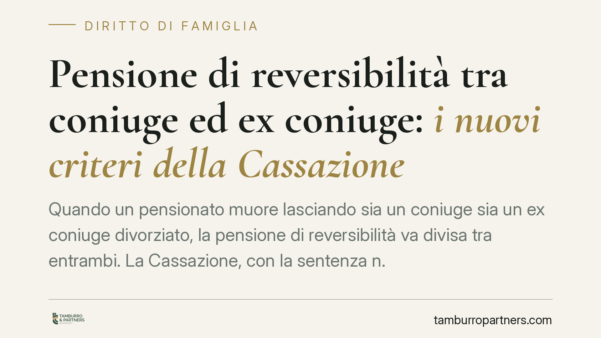

Pensione di reversibilità tra coniuge ed ex coniuge: i nuovi criteri della Cassazione
Quando un pensionato muore lasciando sia un coniuge sia un ex coniuge divorziato, la pensione di reversibilità va divisa tra entrambi. La Cassazione, con la sentenza n. 3955/2026, torna sui criteri di questa ripartizione: la durata del matrimonio resta centrale, ma non è l'unico parametro, e l'assegno divorzile non fissa alcun tetto all'importo spettante.

Il caso e il principio
Alla morte del titolare di una pensione, il coniuge superstite ha diritto alla reversibilità, cioè a una quota del trattamento pensionistico che il defunto percepiva. Il problema sorge quando esiste anche un ex coniuge divorziato che, al momento del divorzio, aveva ottenuto l'assegno divorzile (l'importo periodico riconosciuto al coniuge economicamente più debole dopo lo scioglimento del matrimonio).
In questi casi la pensione non spetta per intero a nessuno dei due: va ripartita. La Corte di Cassazione, con la sentenza n. 3955/2026, ha riaffermato un orientamento ormai consolidato ma spesso applicato in modo rigido dai giudici di merito, correggendone le distorsioni.
Inquadramento normativo
La materia è regolata dall'art. 9, comma 2, della Legge n. 898/1970 (la legge sul divorzio). La norma stabilisce che, in presenza di un ex coniuge titolare di assegno divorzile, la pensione di reversibilità venga divisa tra costui e il coniuge superstite dal tribunale, "tenuto conto della durata dei rispettivi rapporti matrimoniali".
La Cassazione precisa che la durata del matrimonio è il criterio primario ma non esclusivo. Il giudice può e deve considerare ulteriori elementi correttivi: le condizioni economiche delle parti, l'entità del contributo fornito durante la convivenza, la durata delle eventuali convivenze prematrimoniali. La ripartizione, quindi, non è un mero calcolo aritmetico basato sul numero di anni.
Il secondo chiarimento riguarda il rapporto con l'art. 5, comma 6, della stessa legge: l'importo dell'assegno divorzile che l'ex coniuge percepiva non costituisce un limite invalicabile alla quota di reversibilità. In altre parole, la somma spettante all'ex coniuge può anche superare quanto riceveva a titolo di assegno divorzile, perché le due prestazioni hanno natura e funzione diverse.
Implicazioni pratiche
Per l'ex coniuge divorziato la pronuncia è favorevole: elimina un argomento difensivo spesso usato per comprimere la sua quota. Chi percepiva un assegno divorzile modesto non si vede automaticamente assegnata una quota di reversibilità altrettanto modesta.
Per il coniuge superstite il quadro è più articolato. Non può contare su una ripartizione proporzionale certa e deve essere preparato a un giudizio in cui pesano elementi ulteriori rispetto alla sola durata del proprio matrimonio.
Per entrambi, la ripartizione non è automatica: richiede un provvedimento del tribunale. L'INPS eroga la pensione secondo le quote che il giudice stabilisce. Fino a quella decisione, la situazione resta provvisoria e può generare conguagli.
Un punto spesso trascurato: il diritto dell'ex coniuge alla reversibilità presuppone che fosse titolare di assegno divorzile al momento del decesso. Chi ha rinunciato all'assegno o ha definito il divorzio con un'unica somma (la cosiddetta liquidazione una tantum) resta, di regola, escluso.
Cosa fare in concreto
- Verificate i presupposti: accertate se l'ex coniuge era effettivamente titolare di assegno divorzile periodico alla data del decesso. È la condizione d'accesso alla ripartizione.
- Raccogliete la documentazione: recuperate la sentenza di divorzio, i verbali con la determinazione dell'assegno e la documentazione reddituale di entrambi i periodi matrimoniali.
- Ricostruite la durata effettiva dei rapporti, incluse eventuali convivenze prematrimoniali, che possono incidere sul calcolo della quota.
- Agite senza ritardo: la domanda al tribunale va proposta tempestivamente per evitare che l'INPS consolidi erogazioni che dovranno poi essere rettificate.
- Valutate una consulenza prima di accettare una proposta di ripartizione: consigliamo di non assumere che la quota dipenda solo dagli anni di matrimonio.
La sentenza n. 3955/2026 conferma una direzione interpretativa che valorizza la discrezionalità del giudice. Questo rende meno prevedibile l'esito aritmetico, ma apre spazi di tutela per entrambe le posizioni, a seconda delle circostanze concrete del caso.
Contributo informativo a cura di Tamburro & Partners - Avv. Giuseppe Tamburro. Non costituisce parere legale.
Ogni famiglia ha il suo equilibrio.
Separazione, divorzio, affidamento, assegno: se vuoi un confronto riservato su una specifica situazione, scrivi allo studio. Ti rispondiamo entro un giorno lavorativo.